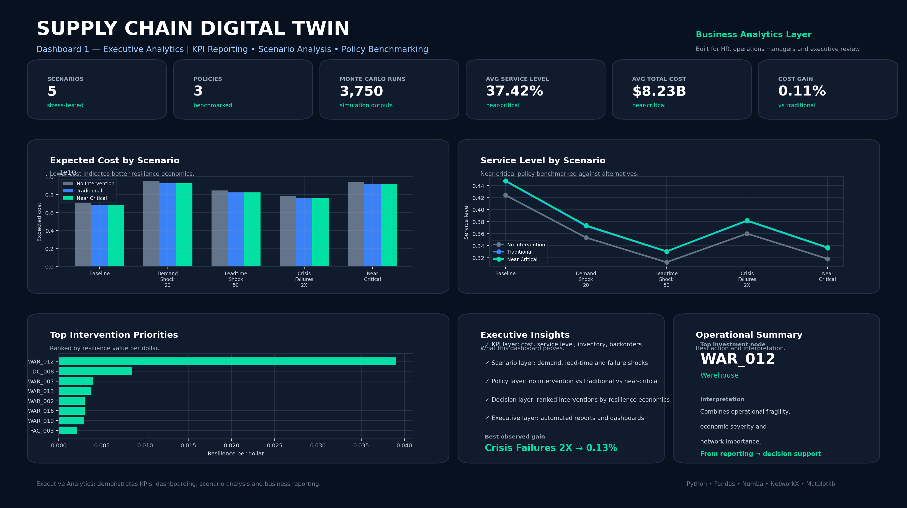

Dashboard 1 — Executive Analytics
KPI reporting, scenario analysis and executive decision support.

This dashboard demonstrates the business analytics layer: KPIs, executive reporting, policy comparison and scenario-level performance.